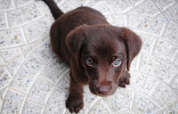
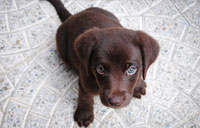
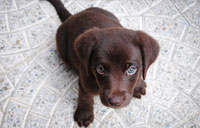
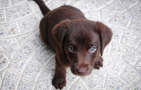

Thumbs
 



 

The Australian Bulldog is essentially the English Bulldog, but bred for Australian conditions. Medium-sized and equipped with a muscular body and short coat, the Australian Bulldog encompasses all of the valued traits of the English Bulldog such as loyalty and its affectionate nature but cancels out some of the physical characteristics that has made bulldogs ill-suited to Australia’s climate.
The modern Australian Bulldog was developed by Pip Nobes in Queensland in the early 1990s. It was developed from an English Bulldog and an Australian pig hunting dog, bred from an assortment of bull terriers. Australian pig dogs, used to hunt the wild boar found in the bush areas of the country, are very hardy working dogs that have become very well accustomed to the extreme heat and dry of the Australian climate. Nobes’ initial goal was to produce a Bulldog with an improved level of health.